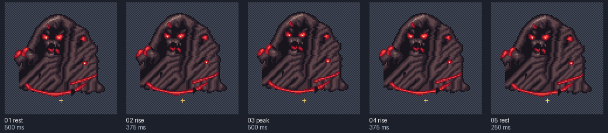
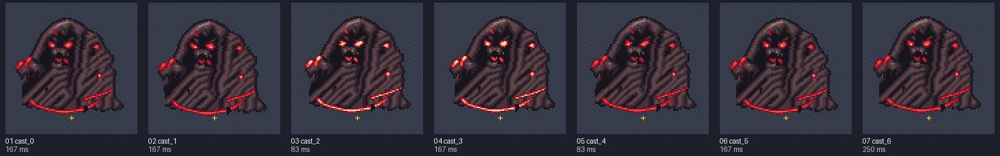
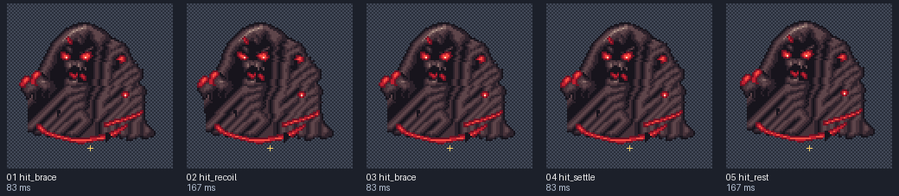
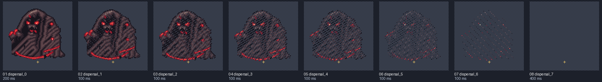

maw-complete-battle
Local preview. Reload to replay a non-looping clip. Yellow crosses mark the shared pivot on contact sheets.
idle
8 FPS · loop: True
Frames and timing

- rest: 500.00 ms
- rise: 375.00 ms
- peak: 500.00 ms
- rise: 375.00 ms
- rest: 250.00 ms
attack
12 FPS · loop: False
Frames and timing

- cast_0: 166.67 ms
- cast_1: 166.67 ms
- cast_2: 83.33 ms
- cast_3: 166.67 ms
- cast_4: 83.33 ms
- cast_5: 166.67 ms
- cast_6: 250.00 ms
hurt
12 FPS · loop: False
Frames and timing

- hit_brace: 83.33 ms
- hit_recoil: 166.67 ms
- hit_brace: 83.33 ms
- hit_settle: 83.33 ms
- hit_rest: 166.67 ms
death
10 FPS · loop: False
Frames and timing

- dispersal_0: 200.00 ms
- dispersal_1: 100.00 ms
- dispersal_2: 100.00 ms
- dispersal_3: 100.00 ms
- dispersal_4: 100.00 ms
- dispersal_5: 100.00 ms
- dispersal_6: 100.00 ms
- dispersal_7: 400.00 ms